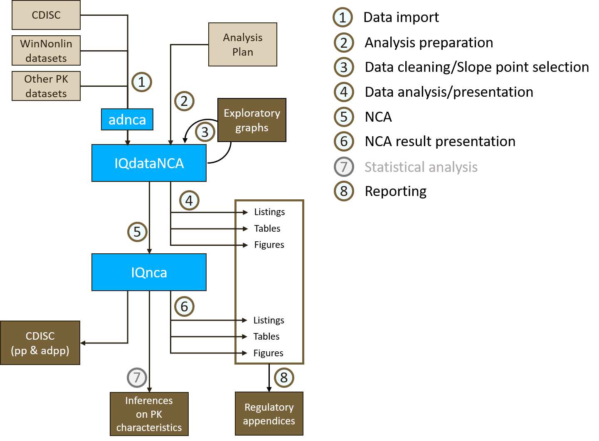

3 Workflow
The workflow of a complete non-compartmental analysis with IQnca from source data to the final reporting is depicted in Figure 3.1. The cornerstone of this workflow is the generation of the IQdataNCA object that augments the source data with information from the analysis plan and during which data cleaning steps are implemented. The created IQdataNCA object contains all information related to the NCA, namely, the concentration data as well as information about the handling during data representation. With such an approach, the NCA and subsequent steps can be highly automated.
The first part of the workflow (Steps 1, 2, and 3) deals with importing the concentration data, applying settings like below the limit of quantification (BLQ) handling or AUC calculation method from the analysis plan, iteratively and interactively cleaning the data and revisiting the point selection for slope calculation.
The second part (Steps 4 to 7) converts the data presentation in tables, listings, and figures (TLFs), the NCA, the result presentation in TLFs as well as providing submission-ready material. The latter comprises the calculated NCA parameters as pp and adpp data sets in XPT format and a report with the TLFs can be generated in Word format (with the help of IQReport. In addition the used IQdataNCA object can be exported as an adnca data set in XPT format.

3.1 Import Data
In this first step of the workflow the concentration data set is prepared such that it can be used as input to the IQdataNCA function. Concentration data preferentially as a CDISC adpc data set is loaded from the source file and an input data set is created by mapping the columns to required and optional columns as defined in Chapter 5 Data Specification.
The specification containing also later derived columns can be displayed by the function dataSpec_IQdataNCA. The table below shows the handled columns of the input data set. There are required columns, columns that are only required for steady-state profiles or intravenous (IV) infusions, optional columns that are used for annotation purpose, and optional covariate columns which comprise typical covariates which can be used for stratification. The table also shows a mapping of CDISC columns to the input columns highlighting an easy translation of an ADaM data set to an input data set to IQdataNCA.
| Column | Label | Suggested CDISC column | Comment |
|---|---|---|---|
| Required | |||
| USUBJID | Unique subject identifier | USUBJID | Always to be provided |
| STUDYID | Study ID | STUDYID | Always to be provided |
| COMPOUND | Name of compound | Always to be provided | |
| ANALYTE | Name of analyte | PCTEST | Might be available in PCTEST |
| MATRIX | Matrix definition | PCSPEC | PCSPEC |
| PROFILE | Annotation of distinct profiles | User defined - could be based on one or multiple columns in the source data. | |
| PROFTYPE | Type of profile | Always to be provided | |
| GROUP | Treatment group information | ACTARMCD/ACTARM | Might be available as ACTARMCD or ACTARM in adpc. Could also be constructed based on DOSE+DOSEUNIT and potentially other identifiers. |
| GROUPN | Treatment group dose information | Always to be provided | |
| GROUPU | Unit of GROUPN | Always to be provided | |
| DAY | Actual Study Day of PK sampling | PCDAY | PCDAY |
| ATIME | Actual relative time to previous dose | PCDTC-PCRFTDTC | Difference between PCDTC and PCRFTDTC in TIMEUNIT units. If some information is missing then set to NA (single records or all records). Imputation in certain cases can be done but for now should be done manually, entering info what was done into the COMMENTR column |
| NTIME | Nominal relative time to previous dose | PCTNUM | PCTPTNUM If not available set to NA (single records or all records) |
| TIMEUNIT | Time unit | “Minutes”, “Hours”, “Days”, “Weeks” are currently valid entries | |
| ACONC | Actual observed concentrations | ACONC |
Based on
ACONC=PCSTRESN |
| CONCUNIT | Unit of observed concentrations | PCSTRESU/PCORRESU | PCSTRESU or PCORRESU |
| LLOQ | Lower limit of quantification | PCLLOQ | PCLLOQ |
| ADM | Administration type | EXROUTE | Could be based on EXROUTE but user adaptation needed to required values: “BOLUS”, “INFUSION”, or “EXTRAVASCULAR“ (non-case sensitive) |
| DOSE | Actual dose | EXDOSE | EXDOSE (absolute or relative dose) |
| DOSEUNIT | Dose unit | EXDOSU | EXDOSU. Allowed values: “g”,“mg”,“ug”,“ng”,“pg”, and combinations thereof with body size descriptor for relative doses |
| Conditionally required | |||
| TAU | Dosing interval for steady-state analysis | Required for profiles that are defined by PROFTYPE==”SS” or “FD”. Otherwise NA | |
| ADUR | Actual duration of administration | EXENDTC-PCRFTDTC | Required for IV infusion (ADM = “INFUSION”). Otherwise NA. Defined as difference of EXENDTC and PCRFTDTC. If EXENDTC is missing but PCRFTDTC is defined then ADUR=0. If PCRFTDTC is missing the ADUR=NA. |
| NDUR | Nominal duration of administration | Required for IV infusion (ADM = “INFUSION”). Otherwise NA. | |
| Optional | |||
| VISIT | Visit Name | AVISIT | If not available value set to NA. Main use is for annotation of the data set |
| VISITNUM | Visit Number | AVISITN | If not available value set to NA. Main use is for annotation of the data set |
| PCTPT | Nominal/protocol Time Point Name | PCTPT | If not available value set to NA. Main use is for annotation of the data set |
| PCDTC | Date/Time of PK sampling | PCDTC | If not available value set to NA. Main use is for annotation of the data set |
| EXSTDTC | Start Date/Time of Treatment | EXSTDTC | If not available value set to NA. Main use is for annotation of the data set |
| Covariate | |||
| PERIOD | Period of study | These are all considered covariates. They can be used for stratification of results. But also are displayed in a systematic manner in listings. | |
| SEQUENCE | Sequence | These are all considered covariates. They can be used for stratification of results. But also are displayed in a systematic manner in listings. | |
| COUNTRY | Country identifier | These are all considered covariates. They can be used for stratification of results. But also are displayed in a systematic manner in listings. | |
| SITEID | Site identifier | These are all considered covariates. They can be used for stratification of results. But also are displayed in a systematic manner in listings. | |
| AGE | Age in years | These are all considered covariates. They can be used for stratification of results. But also are displayed in a systematic manner in listings. | |
| SEX | Sex | These are all considered covariates. They can be used for stratification of results. But also are displayed in a systematic manner in listings. | |
| RACE | Race | These are all considered covariates. They can be used for stratification of results. But also are displayed in a systematic manner in listings. | |
3.2 Implement Analysis Plan
In this step the aim is to augment the input data set by data handling and NCA settings that should be applied in the analysis and which are for example defined in an analysis plan. The function IQdataNCA is used to extend the input data set with additional columns. These additional columns for example store information on BLQ data handling, AUC calculation methods, or which time should be used in the subsequent analyses. The user controls these based on the input arguments shown below. By default the arguments are set to most commonly used values. For a complete overview over the data set augmented by the functionIQdataNCA, refer to Chapter 5 Data Specification.
Here, an initial slope calculation based on the “Bestslope” algorithm is conducted that is reviewed and refined in the next step.
The use of the generation of an IQdataNCA object that combines the input data with the analysis method is exemplified in the following code and Table 3.2 gives an overview of the available settings.
dataNCA <- IQdataNCA(data,
COMPTYPE = "endogenous",
AUCMETHD = "Linear Log",
FLGBLQPR = "0")| Argument | Description | Default |
|---|---|---|
| data | data.frame with initial definitions | |
| COMPTYPE | Type of compound: “exogenous” or “endogenous” | exogenous |
| FLAGTIME | “actual”: actual time used in NCA PK parameter determination, “nominal”: nominal time used in NCA PK parameter determination. Default: “actual” It will be checked if ATIME is defined. If not, then “nominal” will be used. | actual |
| FATIMIMP | Used in case if basis for analysis is actual time but some actual time point is missing. In this case the user can decide to impute this time point if the nominal time is available. “asis” or “nominal”. “asis”: if missing then it will not be imputed and not be considered in the analysis. If “nominal” then it will be imputed based on NTIME, NTAFD, NDUR and impact TIME, TAFD, and DUR. Default: “asis” | asis |
| FLGBLQPR | Handling BLLOQ values before first observation above LLOQ. Options: “asis”, “0”, ” LLOQ/2”, “LLOQ”, “missing”. | 0 |
| FLGBLQIN | Handling BLLOQ values between observations above LLOQ. Options: “asis”, “0”, ” LLOQ/2”, ” LLOQ “,”missing”. | missing |
| FLGBLQP1 | Handling first BLLOQ value after last observation above LLOQ. Options: “asis”, “0”, ” LLOQ/2”, ” LLOQ “,”missing”. | LLOQ/2 |
| FLGBLQPO | Handling BLLOQ values after first BLLOQ post last observation above LLOQ. Options: “asis”, “0”, ” LLOQ/2”, ” LLOQ “,”missing”. | missing |
| FGBQPLIN | Handling BLLOQ values in plots on linear Y axis “asCONC”, asis”, “0”, ” LLOQ/2”, ” LLOQ “,”missing”. | asCONC |
| FGBQPLOG | Handling BLLOQ values in plots on log Y axis “asCONC”, “asis”, “0”, ” LLOQ/2”, ” LLOQ “,”missing”. | asCONC |
| AUCMETHD | Defines AUC calculation method. “Linear Log”, “LinearUp LogDown”, “Linear LinearInterpolation”, “Linear LinearLogInterpolation” | Linear Log |
| AUCINVAL | Character string defining one or more AUC intervals to be calculated. Example: AUCINVAL <- “[0;24];[0;48]”. Note that separators are “;” to allow to store that information also in a CSV file! | NA |
| SLOPETOL | Tolerance for bestslope algorithm | 1e-04 |
| FLAGoverwrite | If TRUE then derived columns will be regenerated even if already provided in data (safest). If FALSE then the information in the provided columns will be kept as-is (requires to know exectly what to do). | TRUE |
| FLAGignore | If TRUE then default rules for exclusion of records from summary tables and NCA parameter calculation are used when applicable (e.g. pre-dose samples >LLOQ). If FALSE then all samples by default are passed through as available in the input data. The first setting is for real use. The second is mainly to allow comparison with results from other NCA tools. | TRUE |
3.2.1 Ignored observations
All observations with missing time or missing concentration as well as observations before the first/single dose for first and single dose profiles of exogenous compounds will be flagged to be ignored from summaries and NCA. For the NCA, pre-first/single dose observations exceeding 5% of the (individual) maximum concentration (Cmax) are flagged specifically. Individual observations can manually be flagged to be ignored from summary tables and/or the NCA as described in the Explore and Clean Data section.
3.2.2 Customized AUC intervals
AUCs for customized intervals, i.e., intervals not included as standard intervals from time = 0 to the last observation time, from time = 0 to infinity, or over one dosing interval are specified with the input argument AUCINVAL which is a character containing the start and end times of the interval in squared brackets. Multiple customized intervals can be specified as shown in the example below. If the start or end time of the intervals do not coincide with an observation time, the concentration will be interpolated or extrapolated (see method section on Concentration interpolation/extrapolation).
dataNCA <- IQdataNCA(data, AUCINVAL = "[0;12];[0;24]")3.2.3 IQRdataNCA export
At this step, an IQdataNCA was created. This object can be written to file with an export function.
export_IQdataNCA(dataNCA, filename = "dataNCA.csv")In addition, the dataset can also be exported as an adnca.xpt file. The adnca.xpt dataset, in contrast to an adpc.xpt dataset contains all information about the data used for the NCA, the settings for the algorithm, etc.
exportADNCA_IQdataNCA(dataNCA, filename = "dataNCA.csv")3.3 Explore and Clean Data
In this step, the data is explored to inspect plausibility of the concentration records for outlier detection. Furthermore, the initial slope assessment is inspected to potentially manually revise the data point selection for slope calculation.
For the graphical data exploration, the plot function for an IQdataNCA data set provides a detailed overview on the concentration data per individual.
# Load prepared IQdataNCA object
dataNCA <- load_IQdataNCA("dataNCA.csv")
# Explore data graphically
plot(dataNCA, filename = "InitialExploration.pdf")One panel per individual and profile is plotted displaying the concentration time course with linear or logarithmic y-axis. The plots are annotated to be informative for data cleaning and refining the slope calculation by:
- Indicating the points selected by initial slope calculation,
- Annotating R2 and adjusted R2,
- Highlighting profiles for which the adjusted R2 is poor (<0.85),
- Indicating the lower limit of quantification (LLOQ),
- Indicating which records are ignored for summary tables or for NCA,
- Highlighting the below LLOQ records and their handling method for NCA.
The plots may highlight some data issues that may be handled by ignoring specific data points. For example, if one concentration observation seems to be an outlier, or a profile may have been observed for a too short time period to be useful for AUC or slope calculation. Different functions are available for ignoring single records or all records from one subject or profile (see Table 3.3). Subjects or selected profiles from subjects maybe excluded from the NCA while records can be chosen to be ignored in the TLFs, the NCA, or both.
| Function | Description | Ignored in |
|---|---|---|
| ignoresubject_IQdataNCA | Ignore single or all profiles from a subject from summaries and NCA. | Summary plots and tables, NCA |
| ignorerecord_IQdataNCA | Ignore record(s) from analysis | Generally (listings, individual and summary plots, summary tables, and NCA) |
| ignoreSUM_IQdataNCA | Ignore record(s) from summaries | Summary plots and tables |
| ignoreNCA_IQdataNCA | Ignore record(s) from NCA | NCA |
| Note: | ||
| Records are always kept in the data set but only columns are added that flag records to be ignored. |
For selection of the records to be ignored, these functions use the unique subject identifier USUBJID, potentially the name of the profile, and - for the records - the record number within the profile IX. These are columns in the IQdataNCA object and are displayed in the exploratory plot such that the user can readily apply the cleaning after the graphical inspection. Importantly, the functions require to give a reason for ignoring or removing the records for traceability which is stored in the IQdataNCA object.
# Remove subject from analysis which was not monitored for long enough time period
dataNCA <- ignoresubject_IQdataNCA(data = dataNCA,
REASON = "Not long enough follow up",
USUBJID = "SAD-Study1-101-101-015")
# Ignore record in NCA
dataNCA <- ignoreNCA_IQdataNCA(data = dataNCA,
REASON = "Implausible value",
USUBJID = "SAD-Study1-101-101-083",
PROFILE = "Part A Day 1",
IX = c(6, 7))The graphical exploration including the initial slope calculation could have revealed that the automatic slope point selection is inadequate. For such a case, a manual slope selection can be explored and applied. Using the function slopetest_IQnca, slope calculation for manually selected points can be performed.
slopetest_IQnca(data = dataNCA, USUBJID = "SAD-Study1-101-101-122", IXslope = 6:15)The function returns a graph similar to the exploration graphs provided by the plot function for the IQdataNCA object. Here, only one panel for the profile with the manually selected slopes is displayed. The user can inspect the graph highlighting the selected points and indicating the R2 and adjusted R2 value for the corresponding slope calculation.
Once manual slope points are selected such that the slopes are determined satisfactorily, the selection is
implemented by updating the IQdataNCA data set using the function slope_IQdataNCA. The input manualslope is a list of entries for each profile identifying the profile and the selected points and can be conveniently created using the function slope_manual_NCA. To all individuals without manually selected data points, the “BestSlope” algorithm will be applied.
# Collect information on manually selected slope points
manualslope <- list(
slope_manual_NCA(USUBJID = "SAD-Study1-101-101-010", IXslope = c(7, 9:11)),
slope_manual_NCA(USUBJID = "SAD-Study1-101-101-176", PROFILE = "Part B Period 2 Day 1", IXslope = 10:14)
)
# Implement manual slopes
dataNCA <- slope_IQdataNCA(data = dataNCA, manualslope = manualslope)Finally, after data cleaning and fine tuning of the slope calculation, the data is “analysis ready”: All method settings and information needed in the following steps, i.e., data presentation in TLFs, NCA, presentation of NCA parameters in TLFs, and generation of the ADPP data set is stored in the IQdataNCA object. It is recommended to rerun the graphical exploration and check the correct implementation of methods, cleaning of records, and slope assessment before exporting the final NCA data set.
3.4 Present Analysis Data
The presentation of the analysis data involves simply calling a function for TLFs to be produced. An overview on the functions is presented in Table 3.4.
| Function | Description |
|---|---|
| Listings | |
| listing_conc_IQdataNCA | Listing of individual pharmacokinetic concentrations |
| listing_concdetailed_IQdataNCA | Listing of individual pharmacokinetic concentrations with information about potential reasons for exclusion, etc. |
| listing_time_IQdataNCA | Listing of individual actual timepoints |
| listing_timedetailed_IQdataNCA | Listing of individual actual timepoints with information about potential reasons for exclusion, etc. |
| Tables | |
| table_summary_conc_IQdataNCA | Table with summaries of concentrations per timepoint stratified by treatment (comparing time points within treatment group and profile) |
| table_summary_conc_by_time_IQdataNCA | Table with summaries of concentrations per timepoint stratified by timepoint (compare treatments and profiles at same timepoints) |
| Figures | |
| figures_indiv_IQdataNCA | Figures with indiviudal panels showing concentration timecourses for all profiles for the respective individual. Can be plotted with linear or log concentration scale. |
| figure_spaghetti_IQdataNCA | Figures with individual time courses stratified to different panels by treatment and profile. Can be plotted with linear or log concentration scale. |
| figure_spaghetti_dosenorm_IQdataNCA | Figures with dose-normalized individual time courses stratified to different panels profile and by different colors for treatment group. Can be plotted with linear or log concentration scale and a different color stratification. |
| figure_summary_mean_IQdataNCA | Figures with time courses of arithmetic mean with standard deviation stratified to different panels by profile and by different colors for treatment group. Can be plotted with linear or log concentration scale. |
| figure_summary_geomean_IQdataNCA | Figures with time courses of geometric mean with geometric standard deviation stratified to different panels by profile and by different colors for treatment group. Can be plotted with linear or log concentration scale. |
| figure_summary_mean_dosenorm_IQdataNCA | Figures with time courses of arithmetic mean with standard deviation stratified to different panels by profile and by different colors for treatment group. Can be plotted with linear or log concentration scale and a different color stratification. |
| figure_summary_geommean_dosenorm_IQdataNCA | Figures with time courses of geometric mean with geometric standard deviation stratified to different panels by profile and by different colors for treatment group. Can be plotted with linear or log concentration scale and a different color stratification. |
For all these functions, a TLFs number can be provided that is then included in the caption. The output for a listing or tables is an .Rmd file that can be directly used to compile the listing or table in a Word document in the reporting step. For each function, the figure is printed into a multi-page PDF file. Next to these, an .Rmd file with the same name is generated that imports the figure into a Word document.
3.5 Execute the NCA
The NCA is performed by calling nca_IQdataNCA on the IQdataNCA object returning the results as an IQnca object. This object is an R data frame with each row containing the calculated individual NCA parameters and attributes containing additional information like the input data set.
result <- nca_IQdataNCA(data = dataNCA)The NCA data set can be exported into a .csv and/or .txt file by the function export_IQnca. Additionally there is also the possibility to export the NCA results to CDISC PP and ADPP .xpt files by using the function exportCDISC_IQnca.
3.6 Present NCA Results
The presentation of the NCA results involves simply calling a function for a listing or table to be produced. An overview on the functions is presented in Table 3.5.
| Function | Description |
|---|---|
| Listings | |
| listing_pkparameter_IQnca | Listing of individual PKparameters per USUBJID and PROFILE |
| Tables | |
| table_summary_byGROUP_pkparameters_IQnca | Table of summary statistics of PKparameters per PROFILE, GROUP and a potential additional stratification column |
| table_summary_acrossGROUP_pkparameters_IQnca | Table of summary statistics of PKparameters per PROFILE and a potential additional stratification column |
3.6.1 Non calculated and unreliably calculated PK parameters
Some PK parameters are subject to criteria of reliability. These parameters are:
- Listings of individual PK parameters will flag all affected values and report the reasons behind non-calculated and unreliably calculated PK parameters,
- Summary statistics will not consider non-calculated and unreliably calculated PK parameters.
Reasons for non-calculated PK parameters are mainly:
- Terminal slope could not be determined,
- All values in a profile are BLQ,
- Dose-normalized values with a dose of 0.
Reasons for unreliably calculated PK parameters are:
- The percentage of extrapolated AUC exceeds 20% of AUCIFO for an individual profile,
- For IV bolus studies, the extrapolated AUC from time 0 to first data point exceeds 20%,
- The terminal half-life was determined over a time interval shorter than 1.5 x terminal half-life,
- Fewer than 3 different time points used to calculate the terminal phase,
- The coefficient of determination R2ADJ is smaller than 0.85.
3.7 Statistical Analysis
The following features will be added to IQnca in the future:
- Non-inferiority testing,
- Bioavailability calculation,
- Bioequivalance testing.
3.8 Reporting
IQnca provides the possibility to create comprehensive Word reports consisting of all TLFs, detailing data for each subject, group and profile.
For the generation of such report, the IQreport tool is required. For additional details visit the IQreport website.
The function report_IQnca gathers all TLFs and other .Rmd files. Then the function IQreport from the package of the same name combines them in a single Word document. This reporting function also adds a title page and a table of contents. The output is the final Word report and a report markdown (.rmd) file, which is an enhanced version of R Markdown (.Rmd). The Report Markdown format is used to add features to the Word report not supported by R markdown.